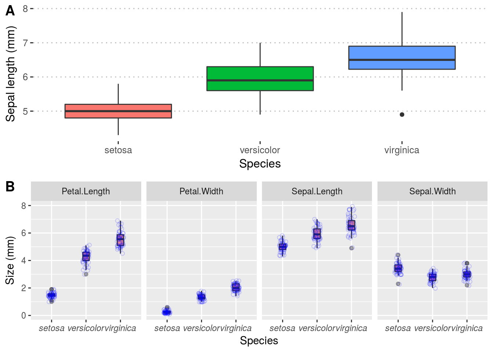

Chapter 4 Graphical data displays
Here we shall provide examples of many kinds of graphical data summaries. We use ggplot2 for these figures and will refrain from using the base R graphs. We shall provide examples of various themes so you can see what is available to use for your own plots. We also include various modifications of the default plots so you can get an idea of how to modify some of the plot characteristics, and we always make sure that our graphs are publication ready. The best way to learn is to work by example. Deeper understanding will emerge only from working through all of these example plots, and making your own changes here and there to see how your own modification will affect your graphs’ appearance. Then find your own data and plot them. As always, liberally make use of the built-in help facility (the more you do, the easier it becomes, like riding a bicycle). Also, don’t be shy to use Google.
4.1 Qualitative data
Qualitative data that describe group representivity to various categories are best presented as frequency distribution histograms (I interchangeably use histograms, frequency histograms, and frequency distribution histograms). Histograms apply to categorical data. Although it can be presented numerically in tabular form, one more frequently creates a bar or pie graph of the number of occurrences in a collection of non-overlapping classes or categories. Both the data and graphical displays will be demonstrated here.
The first case of a frequency distribution histogram is one that shows the raw counts per each of the categories that are represented in the data. The count within each of the categories (represented by a bar graph called a histogram) sums to the sample size, \(n\). In the second case, we may want to report those data as proportions. Here we show the frequency proportion in a collection of non-overlapping categories. For example, we have a sample size of 12 (\(n=12\)). In this sample, two are coloured blue, six red, and five purple. The relative proportions are \(2/12=0.1666667\) blue, \(6/12=0.5\) red, and \(5/12=0.4166667\) purple. The important thing to note here is that the relative proportions sum to 1, i.e. \(0.1666667+0.5+0.4166667=1\). These data may be presented as a table or as a graph.
Let us demonstrate the numerical and graphical summaries using the built-in iris data:
# the numerical summary produced by a piped series of functions;
# create a summary of the data (i.e. number of replicates per species)
# used for (A), (B) and (C), below
iris.cnt <- iris %>%
count(Species) %>% # automagically creates a column, n, with the counts
mutate(prop = n / sum(n)) # creates the relative proportion of each species
iris.cntR> # A tibble: 3 x 3
R> Species n prop
R> <fct> <int> <dbl>
R> 1 setosa 50 0.333
R> 2 versicolor 50 0.333
R> 3 virginica 50 0.333# a stacked bar graph with the cumulative sum of observations
plt1 <- ggplot(data = iris.cnt, aes(x = "", y = n, fill = Species)) +
geom_bar(width = 1, stat = "identity") +
labs(title = "Stacked bar graph", subtitle = "cumulative sum",
x = NULL, y = "Count") +
theme_minimal()
# a stacked bar graph with the relative proportions of observations
plt2 <- ggplot(data = iris.cnt, aes(x = "", y = prop, fill = Species)) +
geom_bar(width = 1, stat = "identity") +
scale_y_continuous(breaks = c(0.00, 0.33, 0.66, 1.00)) +
labs(title = "Stacked bar graph", subtitle = "relative proportions",
x = NULL, y = "Proportion") +
theme_minimal()
# a basic pie chart
plt3 <- plt1 + coord_polar("y", start = 0) +
labs(title = "Friends don't let...", subtitle = "...friends make pie charts",
x = NULL, y = NULL) +
scale_fill_brewer(palette = "Blues") +
theme_minimal()
# if you seriously want a pie chart, rather use the base R function, `pie()`
# here now a bar graph...
# the default mapping of `geom_bar` is `stat = count`, which is a
# bar for each fo the categories (`Species`), with `count` along y
plt4 <- ggplot(data = iris, aes(x = Species, fill = Species)) +
geom_bar(show.legend = FALSE) +
labs(title = "Side-by-side bars", subtitle = "n per species", y = "Count") +
theme_minimal()
ggarrange(plt1, plt2, plt3, plt4, nrow = 2, ncol = 2, labels = "AUTO")
Figure 4.1: Examples of histograms for the built-in Iris data. A) A default frequency histogram showing the count of samples for each of the three species. B) A relative frequency histogram of the same data; here, the sum of counts of samples available for each of the three species is 1. C) A boring pie chart. D) A frequency histogram of raw data counts shown as a series of side-by-side bars.
4.2 Continuous data
4.2.1 Frequency distributions (histograms)
As with discrete data, we have a choice of absolute (Fig. 4.2A) and relative (Fig. 4.2 B-C) frequency histograms. There’s also the empirical cumulative distribution function (ECDF) (Fig. 4.2 D) that uses relative proportions, but in this instance it is the relative proportion that each individual observation has towards the sample. Since the purpose of frequency histograms is to count the number of times something takes place or occurs within a category, what do we do when we are faced with continuous data where no categories are available? We can create our own categories, called bins. See the Old Faithful data, for example. The eruptions last between 1.6 and 5.1 minutes. So, we create intervals of time spanning these times, and within each count the number of times an event lasts as long as denoted by the intervals. Here we might choose intervals of 1-2 minutes, 2-3 minutes, 3-4 minutes, 4-5 minutes, and 5-6 minutes. The ggplot2 geom_histogram() function automatically creates the bins, but we may specify our own. It is best to explain these principles by example (see Figure 4.2 A-D).
# a normal frequency histogram, with count along y
hist1 <- ggplot(data = faithful, aes(x = eruptions)) +
geom_histogram(colour = "black", fill = "salmon", alpha = 0.6) +
labs(title = "Old Faithful data",
subtitle = "A vanilla frequency histogram",
x = "Eruption duration (min)",
y = "Count") + theme_pubr()
# when the binwidth is 1, the density histogram *is* the relative
# frequency histogram
hist2 <- ggplot(data = faithful, aes(x = eruptions)) +
geom_histogram(aes(y = ..density..),
position = 'identity', binwidth = 1,
colour = "black", fill = "salmon", alpha = 0.6) +
labs(title = "Old Faithful data",
subtitle = "Relative frequency histogram",
x = "Eruption duration (min)",
y = "Count") + theme_pubr()
# if binwidth is something other than 1, the relative frequency in
# a histogram is ..density.. * binwidth
hist3 <- ggplot(data = faithful, aes(x = eruptions)) +
geom_histogram(aes(y = 0.5 * ..density..),
position = 'identity', binwidth = 0.5,
colour = "black", fill = "salmon", alpha = 0.6) +
labs(title = "Old Faithful data",
subtitle = "Relative frequency histogram",
x = "Eruption duration (min)",
y = "Relative contribution") + theme_pubr()
# ECDF
hist4 <- ggplot(data = faithful, aes(x = eruptions)) +
stat_ecdf() +
labs(title = "Old Faithful data",
subtitle = "ECDF",
x = "Eruption duration (min)",
y = "Relative contribution") + theme_pubr()
ggarrange(hist1, hist2, hist3, hist4, ncol = 2, nrow = 2, labels = "AUTO")Figure 4.2: Examples of histograms for the Old Faithful data. A) A default frequency histogram showing the count of eruption times falling within the specified bins. B) A relative frequency histogram with bins adjusted to a width of 1 minute intervals; here, the sum of counts within each of the four bins is 1. C) Another relative frequency histogram, but with the bins adjusted to each be 0.5 minute increments; again the sum of counts represented by each bin is equal to 1.
What if we have continuous data belonging with multiple categories? The iris data provide a nice set of measurements that we may use to demonstrate a grouped frequency histogram. These data are size measurements (cm) of the variables sepal length and width and petal length and width, respectively, for 50 flowers from each of three species of Iris. The species are Iris setosa, I. versicolor, and I. virginica.
# first we make long data
iris.long <- iris %>%
gather(key = "variable", value = "size", -Species)
ggplot(data = iris.long, aes(x = size)) +
geom_histogram(position = "dodge", # ommitting this creates a stacked histogram
colour = NA, bins = 20,
aes(fill = Species)) +
facet_wrap(~variable) +
labs(title = "Iris data",
subtitle = "Grouped frequency histogram",
x = "Size (mm)",
y = "Count")
4.2.2 Box plots
Box plots are sometimes called box-and-whisker plots. These graphs are a a graphical representation of the data based on its quartiles as well as its smallest and largest values. The keen eye can glance the ‘shape’ of the data distribution; they provide an alternative view to that given by the frequency distribution. A variation of the basic box-and-whisker plot is to superimpose a jittered scatter plot of the raw data on each bar.
From the geom_boxplot documentation, which says it best (type ?geom_boxplot):
“The lower and upper hinges correspond to the first and third quartiles (the 25th and 75th percentiles).”
“The upper whisker extends from the hinge to the largest value no further than 1.5 * IQR from the hinge (where IQR is the inter-quartile range, or distance between the first and third quartiles). The lower whisker extends from the hinge to the smallest value at most 1.5 * IQR of the hinge. Data beyond the end of the whiskers are called ‘outlying’ points and are plotted individually.”
“In a notched box plot, the notches extend 1.58 * IQR / sqrt(n). This gives a roughly 95% confidence interval for comparing medians.”
Here be examples:
plt1 <- ggplot(data = iris, aes(x = Species, y = Sepal.Length, fill = Species)) +
geom_boxplot(show.legend = FALSE, notch = FALSE) + theme_pubclean() +
labs(y = "Sepal length (mm)") +
theme(axis.text.x = element_text(face = "italic"))
plt2 <- ggplot(data = iris.long, aes(x = Species, y = size)) +
geom_boxplot(fill = "red", alpha = 0.4, notch = TRUE) +
geom_jitter(width = 0.1, shape = 21, colour = "blue", fill = NA, alpha = 0.2) +
facet_wrap(~variable, nrow = 1) +
labs(y = "Size (mm)") + theme_minimal() +
theme(axis.text.x = element_text(face = "italic"))
ggarrange(plt1, plt2, nrow = 2, ncol = 1, labels = "AUTO")Figure 4.3: Examples of box plots made for the Iris data. A) A default box plot for one of the variables only. B) A panelled collection of box plots, one for each of the four variables, with a scatterplot to indicate the spread of the actual replicates.
Box-and-whisker plots have traditionally been used to display data that are not normally distributed, but I like to use them for any old data, even normal data. I prefer these over the old-fashioned bar graphs (as seen later in this section).
The ggpubr package provides many convenience functions for the drawing of publication quality graphs, many of which include summaries of pairwise comparisons (e.g. in t-tests and ANOVAs). Please see here and here.
4.2.3 Pairwise Scatter plots
This graph shows the relationship between two (matched) continuous variables. The statistical strength of the relationship can be indicated by a correlation (no causal relationship implied as is the case here) or a regression (when a causal link of \(x\) on \(y\) is demonstrated).
plt1 <- ggplot(data = iris, aes(x = Petal.Length, y = Petal.Width, colour = Species)) +
geom_point() +
labs(x = "Petal length (mm)", y = "Petal width (mm)") +
theme(legend.position = c(0.18, 0.85))
plt2 <- ggplot(data = iris, aes(x = Petal.Length, y = Petal.Width, colour = Species)) +
geom_point(show.legend = FALSE) +
labs(x = "Petal length (mm)", y = "Petal width (mm)") +
geom_smooth(method = "lm", se = FALSE, show.legend = FALSE)
ggarrange(plt1, plt2, ncol = 2, nrow = 1, labels = "AUTO")Figure 4.4: Examples of scatterplots made for the Iris data. A) A default scatter plot showing the relationship between petal length and width. B) The same as (A) but with a correlation line added.
4.2.4 Bar graphs
Bar graphs display the mean plus/minus some measure of variation around the mean—typically the standard error or the standard deviation. The mean±SE and mean±SD are typically used for normally-distributed data. Here I provide an example bar graph for one of the Iris data set’s variables:
# first make nice labels for the facets because the default ones
# in the dataframe are not so nice; use the `labeller()` function
# to receive the new variable names defined here
facet.names <- c(Petal.Length = "Petal length",
Petal.Width = "Petal width",
Sepal.Length = "Sepal length",
Sepal.Width = "Sepal width")
# start with the `iris.long` long data that were produced above
# we create summaries of mean and SD and squirt it directly
# into the ggplot functions
iris.long %>%
group_by(Species, variable) %>%
summarise(mean.size = mean(size),
sd.size = sd(size)) %>%
ggplot(aes(x = Species, y = mean.size)) +
geom_bar(stat = "identity") +
geom_errorbar(aes(ymin = mean.size - sd.size, ymax = mean.size + sd.size), width = 0.2) +
facet_wrap(~variable, labeller = labeller(variable = facet.names)) +
labs(y = "Size (mm)", title = "A box plot...", subtitle = "...of the Iris data") +
theme(axis.text.x = element_text(face = "italic"))Figure 4.5: Box plots of the mean±SD of the four Iris variables.
4.2.5 Density graphs
Often when we are displaying a distribution of data we are interested in the “shape” of the data more than the actual count of values in a specific category, as shown by a standard histogram. When one wishes to more organically visualise the frequency of values in a sample set a density graphs is used. These may also be thought of as smooth histograms. These work well with histograms and rug plots, as we may see in the figure below. It is important to note with density plots that they show the relative density of the distribution along the Y axis, and not the counts of the data. This can of course be changed, as seen below, but is not the default setting. Sometimes it can be informative to see how different the count and density distributions appear.
# a normal density graph
dens1 <- ggplot(data = faithful, aes(x = eruptions)) +
geom_density(colour = "black", fill = "salmon", alpha = 0.6) +
labs(title = "Old Faithful data",
subtitle = "A vanilla density plot",
x = "Eruption duration (min)",
y = "Density") + theme_pubr()
# a density and rug plot combo
dens2 <- ggplot(data = faithful, aes(x = eruptions)) +
geom_density(colour = "black", fill = "salmon", alpha = 0.6) +
geom_rug(colour = "red") +
labs(title = "Old Faithful data",
subtitle = "A density and rug plot",
x = "Eruption duration (min)",
y = "Density") + theme_pubr()
# a relative frequency histogram overlayed with a density plot
dens3 <- ggplot(data = faithful, aes(x = eruptions)) +
geom_histogram(aes(y = ..density..),
position = 'identity', binwidth = 1,
colour = "black", fill = "turquoise", alpha = 0.6) +
geom_density(colour = "black", fill = "salmon", alpha = 0.6) +
labs(title = "Old Faithful data",
subtitle = "Relative frequency with density",
x = "Eruption duration (min)",
y = "Density") + theme_pubr()
# a normal frequency histogram with density overlayed
# note that the density curve must be adjusted by
# the number of data points times the bin width
dens4 <- ggplot(data = faithful, aes(x = eruptions)) +
geom_histogram(aes(y = ..count..),
binwidth = 0.2, colour = "black", fill = "turquoise", alpha = 0.6) +
geom_density(aes(y = ..density.. * nrow(datasets::faithful) * 0.2), position = "identity",
colour = "black", fill = "salmon", alpha = 0.6) +
labs(title = "Old Faithful data",
subtitle = "Frequency with density",
x = "Eruption duration (min)",
y = "Count") + theme_pubr()
ggarrange(dens1, dens2, dens3, dens4, ncol = 2, nrow = 2, labels = "AUTO")
Figure 4.6: A bevy of density graphs option based on the iris data. A) A lone density graph. B) A density graph accompanied by a rug plot. C) A histogram with a density graph overlay. D) A ridge plot.
4.2.6 Violin plots
The density graph is not limited to it’s use with histograms. We may combine this concept with box plots, too. These are known as violin plots and are very useful when we want to show the distribution of multiple categories of the same variable alongside one another. Violin plots may show the same information as box plots but take things one step further by allowing the shape of the boxplot to also show the distribution of the data within the sample set. We will use the iris data below to highlight the different types of violin plots one may use.
# A basic violin plot
vio1 <- ggplot(data = iris, aes(x = Species, y = Sepal.Length, fill = Species)) +
geom_violin() +
theme_pubclean() + theme(legend.position = "none") +
labs(title = "Iris data",
subtitle = "Basic violin plot", y = "Sepal length (mm)") +
theme(axis.text.x = element_text(face = "italic"))
# Aviolin plot showing the quartiles as lines
vio2 <- ggplot(data = iris, aes(x = Species, y = Sepal.Length, fill = Species)) +
geom_violin(show.legend = FALSE, draw_quantiles = c(0.25, 0.5, 0.75)) +
theme_pubclean() + theme(legend.position = "none") +
labs(title = "Iris data",
subtitle = "Violin plot with quartiles", y = "Sepal length (mm)") +
theme(axis.text.x = element_text(face = "italic"))
# Box plots nested within violin plots
vio3 <- ggplot(data = iris, aes(x = Species, y = Sepal.Length, colour = Species)) +
geom_violin(fill = "grey70") +
geom_boxplot(width = 0.1, colour = "grey30", fill = "white") +
theme_pubclean() + theme(legend.position = "none") +
labs(title = "Iris data",
subtitle = "Box plots nested within violin plots", y = "Sepal length (mm)") +
theme(axis.text.x = element_text(face = "italic"))
# Boxes in violins with the raw data jittered about
vio4 <- ggplot(data = iris, aes(x = Species, y = Sepal.Length, colour = Species)) +
geom_violin(fill = "grey70") +
geom_boxplot(width = 0.1, colour = "black", fill = "white") +
geom_jitter(shape = 1, width = 0.1, colour = "red", alpha = 0.7, fill = NA) +
theme_pubclean() + theme(legend.position = "none") +
labs(title = "Iris data",
subtitle = "Violins, boxes, and jittered data", y = "Sepal length (mm)") +
theme(axis.text.x = element_text(face = "italic"))
ggarrange(vio1, vio2, vio3, vio4, ncol = 2, nrow = 2, labels = "AUTO")4.3 Exercises
4.3.1 Exercise 1
Choose a dataset, either one of the many built into R or one of your own, and create four distinctly different figures. Use ggarrange() to stitch them together in a meaningful way.